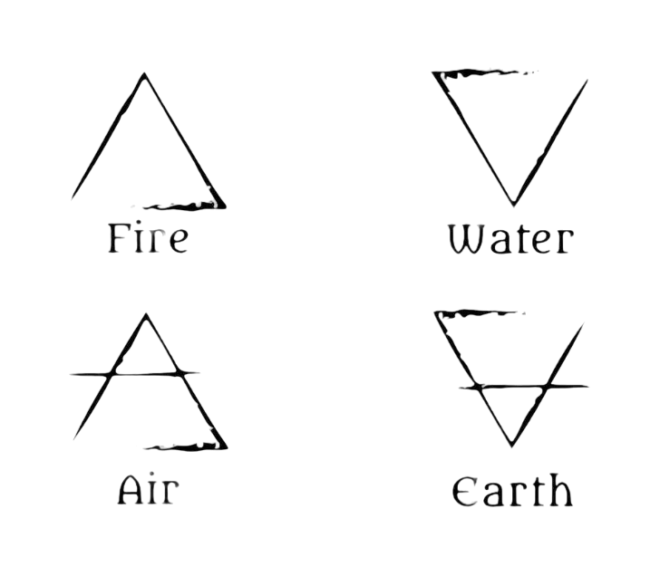

History
Mechanical physics is a branch of physics that focuses on the study of motion and the forces that cause it. Throughout history, numerous scientists have contributed to the development of mechanics,from the first observations to the most advanced theories.
Aristotle
Aristotle (384-322 BC): Aristotle was one of the first philosophers to address the study of movement. He proposed a geocentric theory in which he believed that objects fell at different speeds depending on their weight, an idea that prevailed for centuries.
The Classical Elements:
The ancient Greeks are often credited with discovering, or at least providing the concept for, the atom. Indeed, one Greek philosopher, Democritus, probably did believe this, or at least provided the theory as a topic for debate. However, the majority of Greeks who gave thought to the subject believed that the smallest unit that anything could be divided into was the element.
Aristotle named four elements; fire, air, earth and water. However, for some years after this, philosophers argued which of these four elements was the main one. Thales argued that everything was made of water, while Heraclitus disagreed and claimed that fire was the major element, and Anaximenes refused to believe either and put forward air as the obvious candidate.

Galileo Galilei
Galileo Galilei (1564-1642): Galileo performed pioneering experiments on the movement and fall of objects. He discovered that all objects, regardless of their mass, fall at the same rate in a uniform gravitational field. He also formulated the laws of motion and laid the foundation for the law of inertia.
Isaac Newton
Isaac Newton (1643-1727): Newton consolidated Galileo's ideas and formulated the laws of motion and the law of universal gravitation. His contributions revolutionized physics and astronomy, providing a mathematical framework for understanding and predicting the motion of objects.
Three-body problem
Three-body problem: The gravitational interaction between three celestial bodies is a classic problem in celestial mechanics that still has no general analytical solution. The complexity of this problem has led to the development of numerical methods and the study of chaotic systems.
Einstein's theory of relativity
Einstein's theory of relativity: In the early 20th century, Albert Einstein proposed the theory of relativity, which transformed the understanding of gravity. The theory of general relativity describes gravity as a curvature of space-time caused by the presence of mass and energy.
Quantum mechanics
Quantum mechanics: At the subatomic level, quantum mechanics replaced classical mechanics. Developed in the first half of the 20th century, quantum mechanics describes the behavior of subatomic particles and has led to technologies such as quantum electronics.
Double pendulum problem
Double pendulum problem: A classic problem in mechanics is the study of the double pendulum, which presents chaotic behaviors and is an example of nonlinear dynamic systems.
Rigid body problem
Rigid body problem: The study of rotating rigid bodies has led to the development of rigid mechanics and has found applications in engineering and vehicle dynamics.